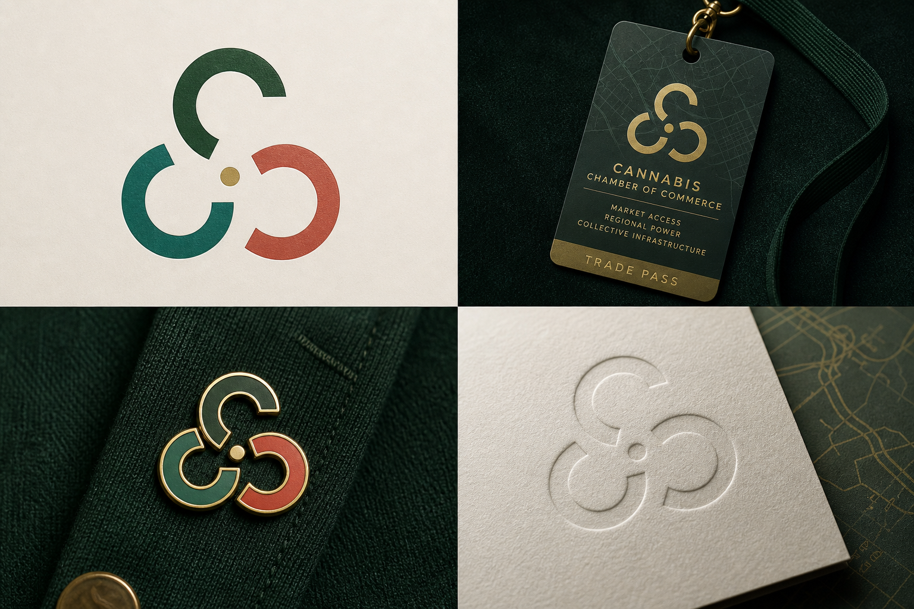
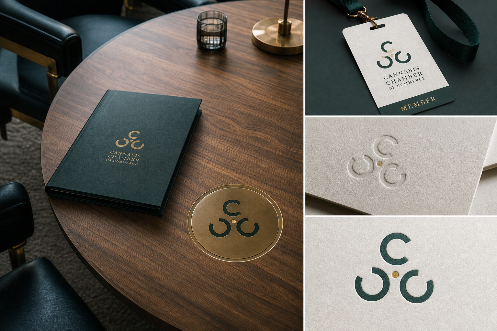
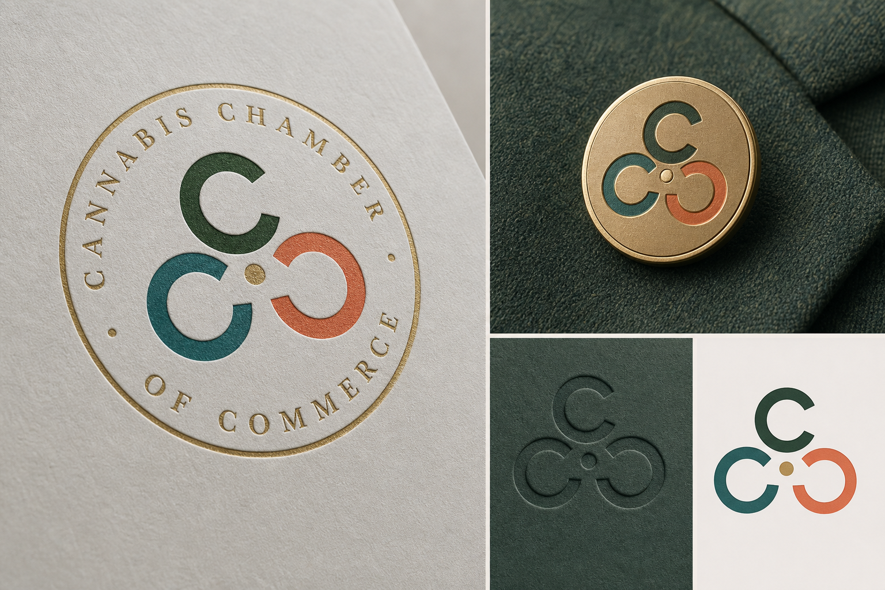

Logo Refinement V9
Locked Rule
The idea still needs one master C shape duplicated three times around one center dot. These images test range, not final construction.
Best Push
The market-access map route feels most original while still staying connected to access, regional power, and infrastructure.
Best Object
The ignition pin route gives the mark stronger physical presence and makes the center dot feel like an economic catalyst.
Watch Item
The seal language is chamber-coded, but any ring text from image generation must be treated as unreliable until rebuilt manually.
Route A. Market Access Map

Route B. Ignition Pin System
Secondary Tests

